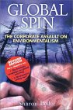
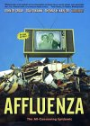
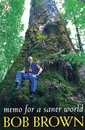
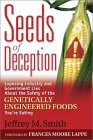
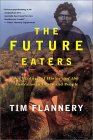

Books
Books have the ability to make us something higher, to open our mind to the thoughts of others in a way merely interacting cannot. These are books I have read and got something meaningful from, most of them have changed the way I think.
|
 |
Global Spin : The Corporate Assault on Environmentalism - Sharon Beder |
| This is one of the most important books I have ever read, I just can't recommend it highly enough. Sharon Beder outlines how corporations are waging a very conscious war for the public mind against environmentalism, with regard for only themselves. They have resources and media at their control that groups reliant on public donations can only dream about, and when they can't squash the truth with law suits, advertising and political meddling, they take on the facade of traditional grass roots activism and make it their own. I can't say enough about this book, if you care about the environment and want to understand why more isn't being done, read this book. If you want to be part of creating a better world, you have to know your enemy, it is that simple. I was lucky enough to see Sharon Beder talk at the Brisbane Social Forum 2001, she is quite unassuming and speaks quietly, but she is very passionate about what she believes, which we should all be grateful for. Note: You can read some of the book for free at Amazon if you click through from the link on the image and poke around a bit |
|
 |
Affluenza : The All Consuming Epidemic - John De Graaf, David Wann, Thomas N. Taylor |
| Affluenza (Affluence + Influenza) takes the point of view that ever increasing consumption is a disease, caused by greed, spread by advertising, it's symptoms are ever increasing piles of stuff we never use, and it's logical end is the destruction of the natural world in which we live. On average we have twice as much 'stuff' now as we did fifty years ago, yet studies show we are no happier now than we were then. Perhaps if we were to give away half of our 'stuff', we wouldn't need to work as many hours, we could spend more time pursuing beauty within our own lives, we could be twice as happy as we were fifty years ago with the same amount of 'stuff' and be living more sustainably in a more beautiful world. Our lifestyles should reflect an achievable model for all peoples, however if all the worlds peoples were to live as we do in Western culture, we would destroy the world in a few years. Morally it should be up to those who have the most to show the way for those who's actions are limited by their present fear of destitute poverty. We need to simplify our lives, working out what is really important to us, be scientific about how we can achieve the best quality of life whilst not consuming as if we existed in a moral vacuum. Our current measurements of national progress are purely financial, smokers purchase cigarettes, doctors are required to treat their lung cancer etc...this is a net gain to the financial system, but what gain is it to our quality of life? We need to start looking at real indicators of the health and happiness of our community, rather than delusional financial ones. Affluenza looks at this disease from a number of different angles, packed full of great information, it might just be a survivial guide for the modern soul. You can read some of this book online |
|
 |
Memo for a Saner World : Bob Brown |
| Bob Brown stands head and shoulders above the leaders of other parties in this country, morally, intellectually and philosophically. Memo for a Saner World is a collection of disparite thought, though with a clear call within it for a more understanding and ecologically sound world. Detailing some of Bob Brown's struggles thoughout the years, he has risked his own safety for higher causes, and has had some stunning successes. For those seeking a deeper understanding of what the Green party is all about, I recommend Memo for a Saner World. For those who are already in the party and are committed environmentalists like myself, there are probably better books to read. The image link does not go to Amazon like the others. |
|
 |
Seeds of Deception : Jeffrey M. Smith |
| "Exposing Industry and Government Lies About the Safety of the Genetically Engineered Foods You're Eating". I was manning my first Greenpeace stall at a cool place called "Northey Street City Farm", which is this organic farming cooperative thing, on some reclaimed flood land in the heart of Brisbane where I live. The theme of the day was a "GE Free Picnic" and there were a number of speakers, by far the best was the author of this book. The purpose of the book is to try and get some information out about all the problems that genetically modified foods have had. In the US they are supposed to be overseen by the Food and Drug Administration (FDA) but in reality this is just a bunch of political appointees, spouting the same "biotech will save the world" of the politicians who appointed them to do that very job. Instead of research into the safety of foods, they prefer to trust the paid studies of Monsanto and their corporate brethren, paid studies which time and again involve poor science that seems more aimed at missing problems than finding them. When health problems have occured, the FDA has stepped into line with the corporations and politicians to protect the image of bio technology, and tried to offer any explanation for problems other than genetic modification. Of course not all people at the FDA are corporate lackeys, many of the scientists do good work, find problems, protest to the FDA leadership and to the US Congress about problems with genetically modified foods, but of course money rules our world, not science, and they are told to be quiet or gotten rid of. It is a disgrace what is going on with genetically modified food, showing the worst aspects of corporate culture trying to sell us products we don't want, trap us into a cycle of dependence on them, and showing complete disregard for the health concerns of the community. The laughable thing is that they make it out as a "science versus superstition" argument, when scientists all around the world are warning about the unpredictability of gene transfer and being ignored. To begin with genes aren't placed into host dna, they are shot into the dna, a highly erroneous process that damages genes and dna in unpredictable ways. The effects they have once they are in the dna are also highly unpredictable, we aren't playing with leggo blocks here, we are playing with living, changing organisms, which adapt and change according to circumstance. What the long term effects of putting a fish gene into a tomato is completely unknown, but the corporations like Monsanto (who bought you Agent Orange, also harmless apparently) don't really give a damn, they are in this for control of your food, and the profits that will bring. Because of the virtually random way genes are shot at dna, you need some mechanism to tell which dna has the new gene and which doesn't. The brilliant solution to this is to place an antibiotic resistant gene onto the foreign gene, then kill all the other dna with antibiotics, and the remaining dna has the new foreign gene. What antibiotic resistances this is going to add to organisms (potentially us) with our medical community already worried that drugs won't be able to treat many of todays diseases in the future, is unknown. You need to know the facts, because our corporate controlled media sure isn't going to give them to you, you need to read books like this before you put biotechnology into your complex system that is the body. Once this genie gets out of the bottle, who knows whether we will ever be able to put it back in again. "Biotech is Godzilla" - Sepultura |
|
 |
The Future Eaters : Tim Flannery |
| "An Ecological History of the Australian Lands and People". If you are an Australian you should read this book, because it contains many of the things we need to know about our real history, not that concerned only with white men and power. We have stewardship of this land, and we are destroying it because we know nothing about it. This book will get you up to speed on the last few millenia, so that you can start creating a better future. Full of interesting and heartbreaking stories, it might make you understand why so many people are voting Green. |
 |
The International Politics of Whaling : Peter J. Stoett |
| After reading this book, you should find you are abreast of most of the issues surrounding whaling, and its history. It offers a reasonably even handed approach, whilst informing the reader that the blue whale has never recovered from the slaughter that went on unimpeded from the 18th to the 20th centuries, he also asks the question of how the whaling moratorium can continue when some species have made good recoveries. The only problem I see in this book is that whilst I don't believe he is wrong that whaling can be done responsibly, he doesn't seem to offer any case that it ever has been done responsibly. The Japanese, whilst brazenly lying to the entire world about the 'scientific whaling' they indulge in, have also been shown through DNA samples taken at Japanese fishing markets, to be continuing to hunt endangered whales despite the eyes of the world, and international opinion being strongly against them. Some of the quotes from the book are mind boggling - "...used declassified Soviet Ministry of Fishing reports to find that one Soviet factory ship had told the International Whaling Commission during the 1960s that it [sic] had killed 152 humpback and 156 blue whales. In fact the ship had taken 7,207 humpbacks and 1,433 blue whales and illegally killed 717 right whales, a species protected by the whaling commission since the 1930s". This is a great book for those who wish to know about whales, whaling and the politics going on in the world that will effect the future of these glorious creatures. |
If there is a book you think I should read, send me the reasons why and I will see if I can get around to it. If you are really keen send it to me.
You can search and purchase books from this Amazon box...